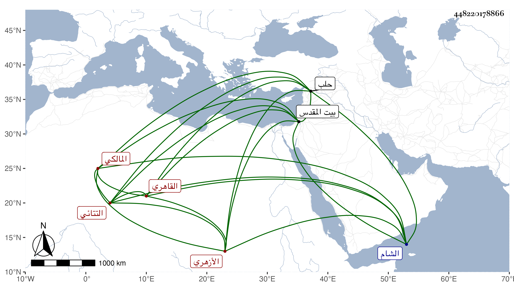

0902Sakhawi.DawLamic.ITO20230111-ara1.EIS1600.448220178866
Biography ID: 448220178866
232
محمد بن الفقيه هرون بن محمد بن موسى التتائي ثم القاهري الأزهري المالكي الماضي شقيقه قاسم والآتي أبوه وأخوه لأمه يوسف التتائي قال لي أنه حفظ القرآن والعمدة ورسالة الفروع وألفية النحو وغالب مختصر الشيخ خليل وأخذ العربية عن يعيش المغربي وهي والفقه عن يحيى العلمي وكذا لازم في الفقه وغيره السنهوري والفرائض والحساب عن الشهاب السجيني في آخرين ممن أخذ عنهم الفنون كالعلاء الحصني فمن دونه وتميز في العربية وغيرها وسافر القدس والشام وحلب وربما أقرأ . مات في سنة ثمان وسبعين وهو صغير عوضه الله الجنة .
